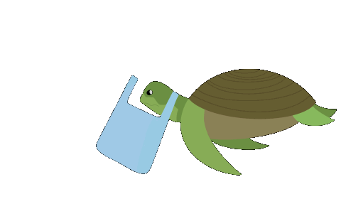
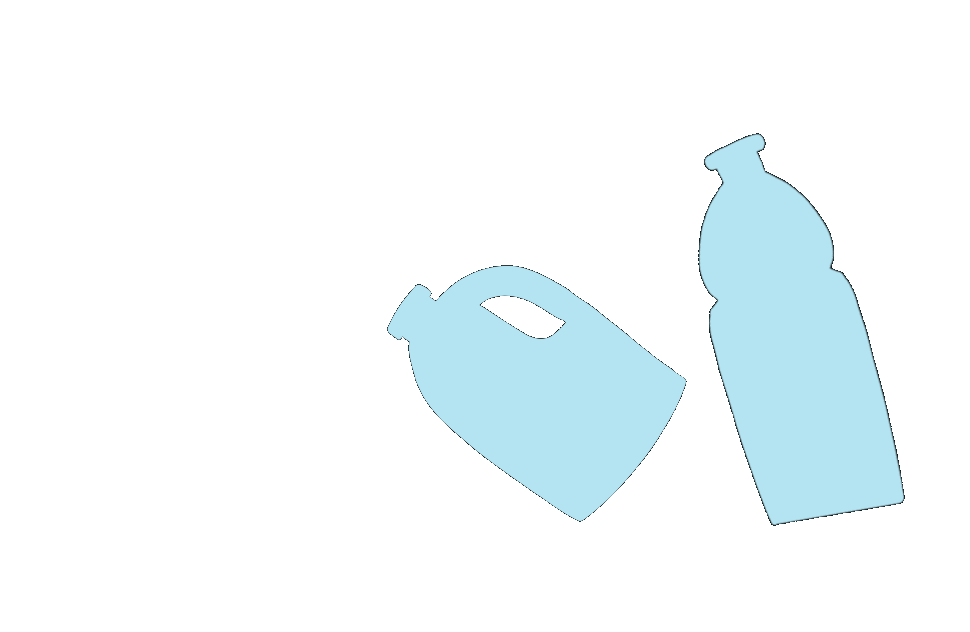
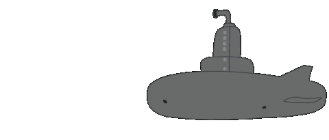
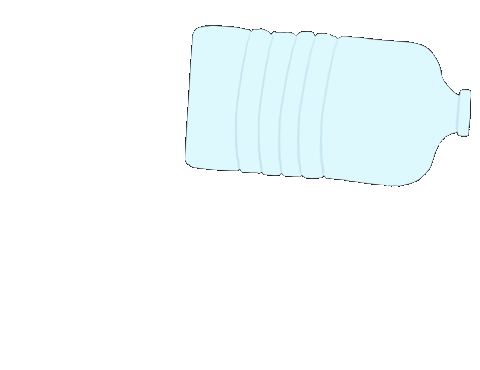
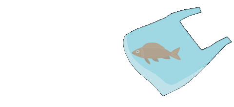
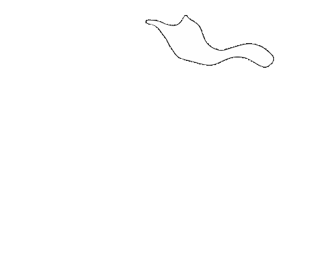

A cada ano 100.00 mamíferos marinhos e um milhão de aves aquáticas morrem por confundir resíduos plásticos com alimentos.

Mais de 150 toneladas de plástico existem nos ocenaos. Uma estimativa de 4,8 a 12,7 milhões de toneladas de plástico entra por ano nos oceanos.

Mais de 150 toneladas de plástico existem nos ocenaos. Uma estimativa de 4,8 a 12,7 milhões de toneladas de plástico entra por ano nos oceanos.

Cerca de 85% de todo lixo encontrado nos mares e oceanos é composto por plásticos.

No dia 31 de maio de 2009, o mini-submarino Nereus desceu a uma profundidade de 10 902m, o que o tornou
o veículo marítimo em atividade que conseguiu atingir a maior profundidade oceânica no mundo.
No dia 31 de maio de 2009, o mini-submarino Nereus desceu a uma profundidade de 10 902m, o que o tornou
o veículo marítimo em atividade que conseguiu atingir a maior profundidade oceânica no mundo.
Os oceanos recebem por ano a impressionante quantidade de oito milhões de toneladas de plástico.
O que não imaginávamos até agora é que o plástico fosse capaz de chegar ao abismo de Challenger,o ponto mais profundo do planeta, situado a 10.928 metros de profundidade, a expedição do multimilionário norte-americano Victor Vescovo descobriu neste mesmo ano embalagens de pastilhas elásticas e uma saca plástica.
A Depressão Challenger é o ponto mais baixo da superfície terrestre. Situa-se na Fossa das Marianas, perto das Ilhas Marianas.

Existem duas vezes mais plásticos no fundo dos oceanos do que aquele que é encontrado à superfície, estima-se que ronda os 14 milhões de toneladas de plástico em todos os fundos marinhos.

